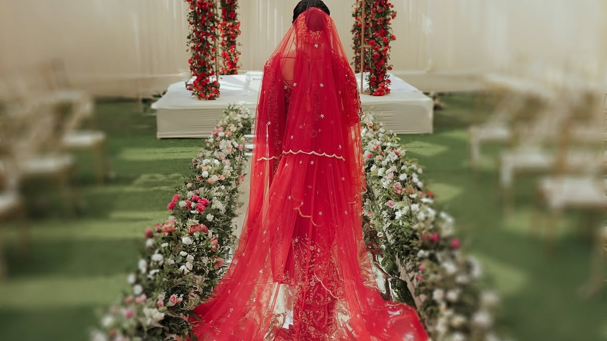
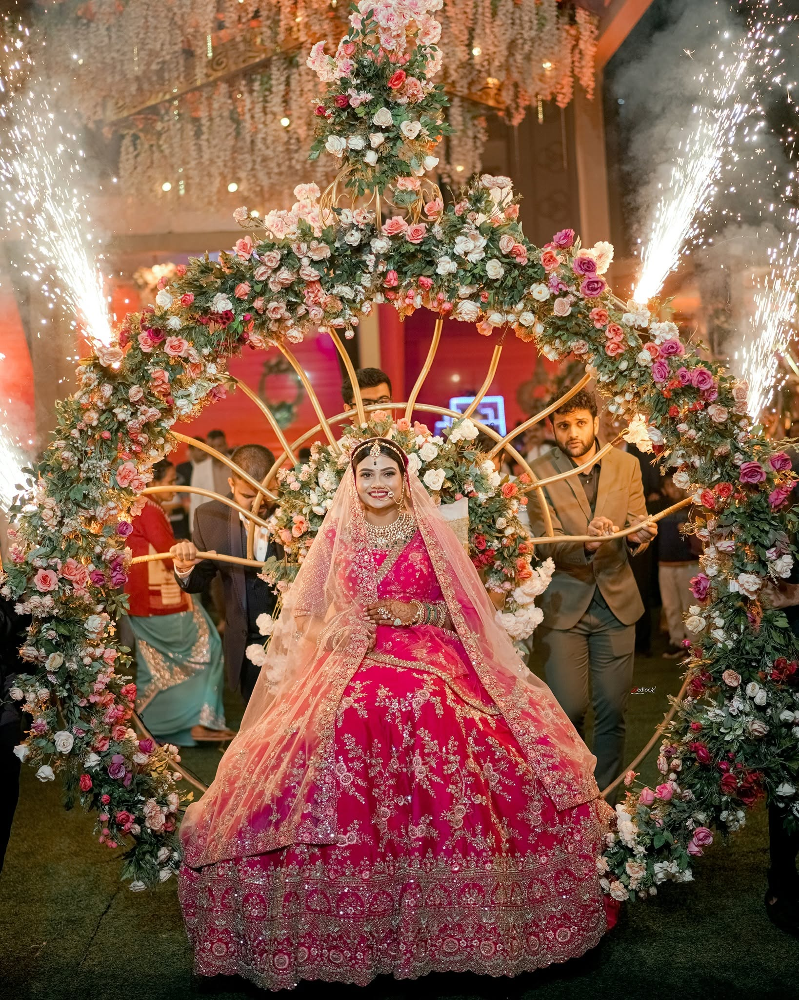
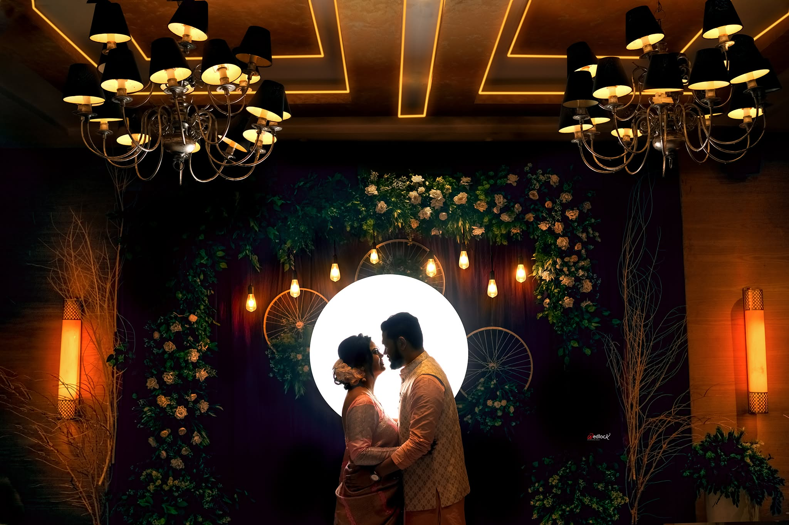

Listen first.
We start with what matters to you, not with a checklist of poses.

Photographs and films for the people, places and in-between moments that make a wedding yours.
We photograph weddings as they unfold — with room for the quiet, the chaos and everything beautifully unscripted.
From Guwahati to wherever your story takes you, Wedlock is built around honest observation, thoughtful direction and images that still feel like you years later.


Not just how it looked.
How it felt.
Every collection is a different way of seeing the people and moments that make a celebration personal. Enter a gallery to see the work in full.
Some memories are better when they breathe. Watch the supplied Wedlock films and reels.
The photographs matter. So does how you feel while making them.
We start with what matters to you, not with a checklist of poses.
When direction helps, we give it. When the moment is already right, we let it happen.
People, details, atmosphere and movement — the story is bigger than the ceremony.
The finished gallery should bring the day back, not simply prove that it happened.

A wedding is a collection of small human moments. Our approach is built around seeing them — beautifully, honestly and without turning your day into a performance.
From the quiet frames to the loudest celebrations, we want the finished story to feel unmistakably yours.
Tell us about your date, your people and what you want to remember.
Start a conversation ↗